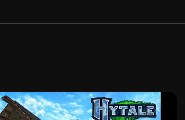
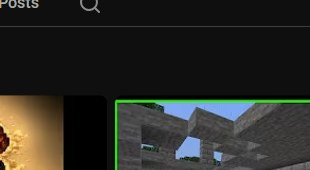
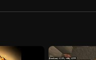
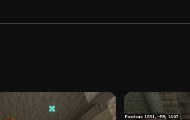
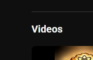

VIEW CHANNEL ↗Guncraft Zombie Edition
A Minecraft Bedrock project inspired by round-based zombie survival, custom weapons, and familiar survival mechanics.
Gameplay screenshots
Select any screenshot to open it at full size.
MINECRAFT BEDROCK CONTENT CREATOR
I'm Hipman — a Minecraft Bedrock addon developer creating custom gameplay, mobs, items, blocks, biomes, and script-powered systems.

SELECTED WORK
A selection of Minecraft creations and game-inspired projects. More screenshots, download links, and technical breakdowns can be added as each project is ready to share.

VIEW CHANNEL ↗A Minecraft Bedrock project inspired by round-based zombie survival, custom weapons, and familiar survival mechanics.
Select any screenshot to open it at full size.
A Minecraft Bedrock recreation of the classic Call of Duty Zombies map, adapted to the block-based world.
Watch the showcase ↗
WATCH SHORT ↗A recognizable Zombies feature recreated in Minecraft, built around the excitement of a random reward.
See more on YouTube ↗
WATCH SHORT ↗A Minecraft take on the weapon-upgrade station from Call of Duty Zombies.
See the feature ↗
VIEW SHOWCASE ↗A Fallout-inspired project exploring a post-apocalyptic atmosphere and world concept.
Select any screenshot to open it at full size.
Custom mobs, items, blocks, biomes, tools, and scripting systems. This space is ready for your next release.
Ask about my work ↘Starter thumbnails are cropped from the channel screenshots you provided. Replace them with full-resolution gameplay screenshots for the strongest presentation.
WHAT I CAN CREATE
A portfolio snapshot of the Minecraft Bedrock content areas I work with.
Gameplay logic and custom addon behavior.
Custom creatures, behaviors, and encounters.
Custom content that expands the player experience.
Worldbuilding, environments, and exploration.
ABOUT HIPMAN
Heyo! I'm Hipman, a Minecraft Bedrock content creator and addon developer. I enjoy building custom experiences that bring new mechanics, creatures, items, and game-inspired ideas into Minecraft. This portfolio is a home for my projects, showcases, and future releases.
Follow the development on YouTube ↗HAVE A PROJECT IN MIND?
For project inquiries, collaborations, or to follow my latest work, reach out through my creator channels.
Add your preferred business email or Discord invite here when you're ready to share it publicly.